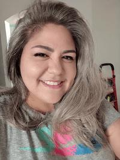

Emma Blanco | WDD 130

I'm a enthusiast for communities and the arts, with a convenient, versatile background in administration. My interest in communities began when I was elected to serve as an IAM shop steward to represent my coworkers at National Airport and progressed into being involved with various local artist communities and grew into years devoted to instrumental organization of congregational units of young single adults. I'm excited by culture and heritage, and I believe connecting with people is the most valuable skill anyone could have.
Lately, as a dual citizen, I've been using my toolbox of experience and skills to support and grow communities in my ancestral family home in the Philippines. I've performed in an event broadcasted to the entire organization membership in the Philippines. I've conducted valuable research on genealogical processes in the Philippines. I've helped open a new FamilySearch center. For the sake of community growth, I've written, trained, taught, pitched, counseled, consulted, and lobbied--and along the way also drew a few pictures.